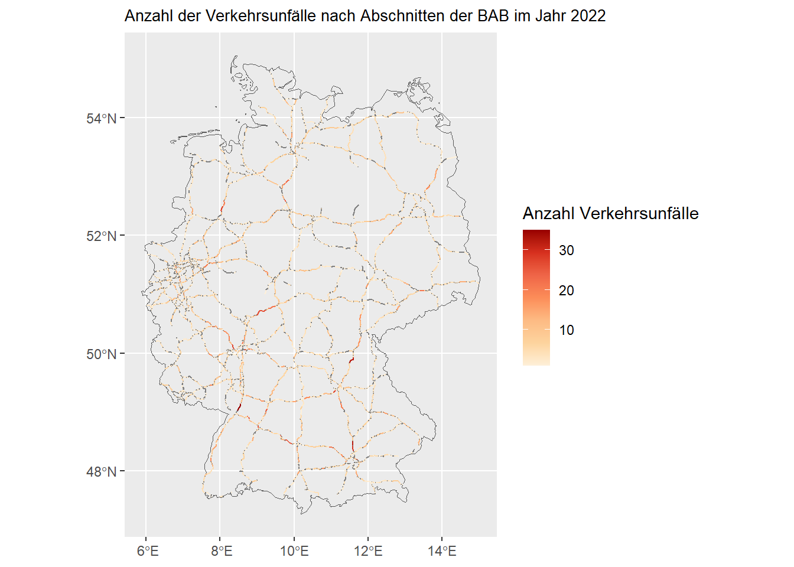
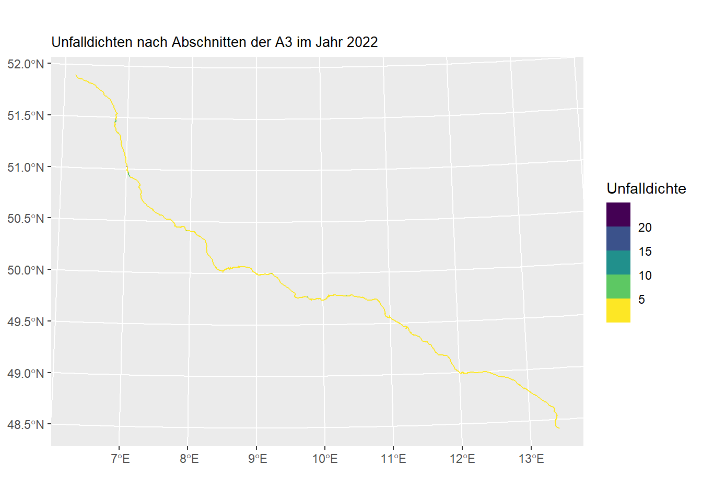
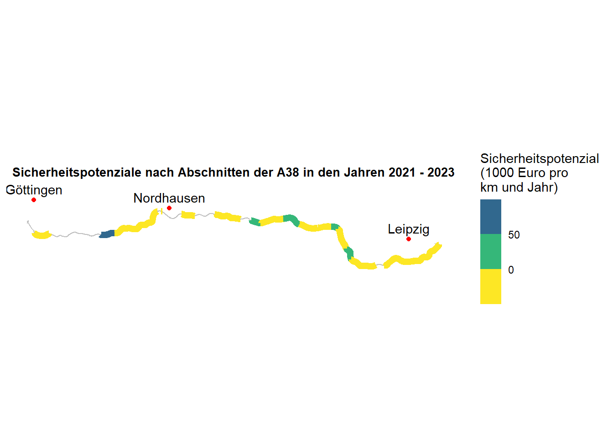

| Unfallkategorie | A38 | Autobahnen |
|---|---|---|
| Unfall mit Getöteten | 8 | 282 |
| Unfall mit Schwerverletzten | 43 | 3739 |
| Unfall mit Leichtverletzten | 132 | 18093 |
| Summe | 183 | 22114 |
3 Musterlösung mit Erläuterungen
3.1 Aufgabe 1 : Anzahl der Verkehrsunfälle
Als frei wählbare Jahr wird 2023 gewählt und als frei wählbare Autobahn die A38.
Als erstes werden die Daten vom Unfallatlas heruntergeladen und in R geladen. Danach wird der Datensatz in ein räumliches Punktobjekt umgewandelt. Die Koordinaten stammen aus den Spalten “LINREFX” und “LINREFY”. Mit CRS (Coordinate Reference System) wird das Koordinatenreferenzsystem EPSG:25832 definiert. Falls sich in den geometrischen Daten noch Informationen zur Höhe (z-Dimension) oder Messwerte oder Attribute (m-Dimension) enthalten sind, werden diese nun entfernt, damit wir gleich sauber mit ihnen weiterrechnen können.
Als nächstes wird das Straßennetz der Bundesfernstraßen als Datensatz ins Projekt geladen. Diese Daten bekommen wir von der Bundesanstalt für Straßen- und Verkehrswesen (BASt). Das Bundesfernstraßennetz beinhaltet Daten zu Bundesautobahnen und Bundesstraßen. Da für uns nur die Autobahnen relevant sind, filtern wir nur diese heraus. Wir wählen als Achse die Bestandsachse, da dies die mittlere Achse der Straße ist und wir keine Unterscheidung der Fahrtrichtung vornehmen müssen. Falls sich in den geometrischen Daten noch Informationen zur Höhe (z-Dimension) oder Messwerte oder Attribute (m-Dimension) enthalten sind, werden diese nun entfernt, damit wir gleich sauber mit ihnen weiterrechnen können.
Den Unfalldaten soll nun aufgrund ihrer Lage in Deutschland der nächstgelegene Autobahnabschnitt und die Entfernung zu diesem hinzugefügt werden. “st_nearest_feature” gibt dabei die Zeilennummer des nächstgelegenen Autobahnabschnitts im Datensatz “bfstn” wieder. Außerdem suchen wir mit “bfstn$Str_Kennung[abschnitt_id]” aus dem Datensatz “bfstn” und der Spalte “Str_Kennung” genau den Eintrag, dessen Zeile durch “abschnitt_id” angegeben wird. Damit bekommen wir statt einer Nummer eines Autobahnabschnittes den Namen der Autobahn (z.B. A1). Zudem wollen wir nur Unfälle, die auf Autobahnen passiert sind, berücksichtigen. Dafür filtern wir nach Unfällen, die in einem 20 m Umkreis zur Bestandsachse der Autobahnen sind. Die 20 m wählen wir, um fast alle Unfälle auf den Fahrbahnen, auch bei 6- oder 8-spurigen Autobahnen, einzuschließen und fast alle Unfälle daneben auszuschließen. Es gibt uns aber keine Garantie, dass alle Unfälle, die wir nun filtern, tatsächlich auf Autobahnen liegen. Den Unterschied des Filters sehen wir im Environment: Der Unfalldatensatz aus 2023 beinhaltet 269.048 Unfälle insgesamt, der Unfalldatensatz für Autobahnen nur noch 22.114. Für mehr Übersichtlichkeit vereinfachen wir unseren Datensatz und lassen uns mit “select” nur bestimmte Spalten anzeigen.
Für die tabellarische Übersicht der Unfälle erstellen wir einen neuen Datensatz, der nur Unfälle auf der Autobahn 38 beinhaltet.
Nun folgt die tabellarische Darstellung. Sowohl für alle Unfälle auf deutschen Autobahnen als auch auf der A38 führen wir folgende Schritte durch: Mit “st_set_geometry(NULL)” entfernen wir die Geometriespalte, da für die Auswertung in Tabellenform nur die Attributdaten benötigt werden. Anschließend gruppieren wir die Unfalldaten nach ihrer Kategorie und berechnen mit “summarise” die Anzahl der Unfälle je Unfallkategorie. Um eine weitere Zeile mit den Summen hinzufügen zu können, muss die Spalte zur Unfallkategorie in einen Zeichenvektor umgewandelt werden (“mutate(UKATEGORIE = as.character(UKATEGORIE))”). Die neue Zeile hängen wir mit “bind_rows()” an. Diese letzte Zeile der Spalte UKATEGORIE („Summe“) enthält nun die Gesamtanzahl aller Unfälle über alle Kategorien hinweg und dient als übersichtliche Gesamtsumme in der Ergebnistabelle. Nun fügen wir die beiden einzelnen Tabellen noch zu einer Tabelle zusammen mit “left_join()” und benennen die Zeilennamen um. Mit “kable()” stellen wir die Tabelle dar und können ihr noch eine Überschrift hinzufügen.
3.2 Aufgabe 2 : Unfallkenngrößen auf Autobahnen
3.2.1 Die Unfallrate UR
“Die Unfallrate ist ein Maß für das (fahrleistungsbezogene) Risiko des Verkehrsteilnehmers, in einen Unfall verwickelt zu werden oder dabei zu verunglücken.” (ESN, 2003, S. 5) Die Formel lautet \[ UR = \frac{U \cdot 10^6}{DTV \cdot L \cdot 365 \cdot t} \] mit den Kenngrößen
- U: Anzahl der Unfälle
- DTV : durchschnittliche tägliche Verkehrsstärke in Kraftfahrzeugen pro 24 Stunden [Kfz/24h oder Kfz/d]
- L : untersuchte Streckenlänge [km]
- t : untersuchter Zeitraum [a].
Die DTV kann den Dauerzählstellen der BASt entnommen werden. Die Streckenlänge ist im Datensatz des Bundesfernstraßennetzes bereits enthalten.
Als erstes laden wir die Daten der Dauerzählstellen in unser Projekt. Mit dem Argument “locale(encoding =”iso-8859-1”)” stellen wir sicher, dass Umlaute und Sonderzeichen, die in deutschsprachigen Datensätzen häufig vorkommen, korrekt eingelesen werden. Da wir die Dauerzählstellen später mit dem Bundesfernstraßennetz verknüpfen möchten, berücksichtigen wir wie bei den anderen Datensätzen ausschließlich Autobahnen. Dazu filtern wir nach der Straßenklasse “Str_Kl ==”A”“. Anschließend entfernen wir mit”drop_na(DTV_Kfz_MobisSo_Q)” alle Beobachtungen, für die keine Verkehrsstärkewerte vorliegen, sodass nur vollständige und auswertbare Zählstellen verbleiben. Im nächsten Schritt wird der Datensatz in ein sf-Objekt umgewandelt. Aus den Koordinatenspalten “Koor_UTM32_E” und “Koor_UTM32_N” werden Punktgeometrien mit dem gleichen Koordinatensystem wie bei den anderen Datensätzen erzeugt. Dadurch sind spätere räumliche Operationen kompatibel. Wie auch bei den anderen räumlichen Datensätzen entfernen wir anschließend mögliche z- und m-Dimensionen aus den Geometrien. Dies stellt sicher, dass alle Geometrien zweidimensional sind und problemlos in weiteren räumlichen Analysen verwendet werden können. Im nächsten Schritt werden die Dauerzählstellen wie bei den Unfällen den nächstgelegenen Autobahnabschnitten des Bundesfernstraßennetzes zugeordnet. Mit “st_nearest_feature()” wird für jede Zählstelle der Index des nächstgelegenen Abschnitts ermittelt und als “abschnitt_id” gespeichert. Im Gegensatz zu den Unfalldaten müssen wir keine Entfernung zur Autobahn ermitteln, weil wir wissen, dass die Zählstellen tatsächlich an Autobahnen sind.
Bevor wir mit den Daten der Dauerzählstellen weiterrechnen, prüfen wir, ob jedem Autobahnabschnitt maximal eine Dauerzählstelle zugeordnet ist. In unserem Verständnis ist ein Autobahnabschnitt u.a. dadurch klassifiziert, dass in diesem keine Auffahrt oder Abfahrt vorhanden ist, daher würden zwei Zählstellen hier nur redudante DTV-Werte liefern. Bevor wir mit dieser Annahme weiterrechnen, kontrollieren wir sie.
# A tibble: 2 × 3
# Groups: abschnitt_id [1]
abschnitt_id DZ_Nr DTV_Kfz_MobisSo_Q
<int> <chr> <dbl>
1 14490 6730 28566
2 14490 6831 45945Wir sehen, dass unsere Annahme falsch ist und es tatsächlich einen Abschnitt mit zwei Zählstellen gibt und beide auch tatsächlich unterschiedliches Verkehrsaufkommen gibt. Zwischen den Zählstellen scheint es also auch die Möglichkeit zu geben, auf die Autobahn auf- oder von ihr abzufahren. Daher fassen wir die Verkehrsstärken nun auf Abschnittsebene zusammen. Hierzu wird die Geometrie entfernt und wir berechnen den mittlere DTV-Wert von beiden Zählstellen je Abschnitt. Und auch bei diesem Datensatz reduzieren wir die Anzahl der Spalten für mehr Übersichtlichkeit.
3.2.1.1 Verbinden der Datensätze des Bundesfernstraßennetzes mit den Zählstellen und den Unfällen
Bisher haben wir allen Unfällen den nächstgelegenen Autobahnabschnitt und die Entfernung zu diesem zugewiesen. Nun wollen wir wissen, wie viele Unfälle es pro Abschnitt gibt. Das machen wir mit “group_by()” und “summarise()”. Außerdem benennen wir die Spalte “nearest_autobahn_id” mit “rename()” in “abschnitt_id” um, damit wir die Datensätze gleich sauber verknüpfen können.
Nun können wir alle drei Datensätze (Bundesfernstraßennetz der Autobahnen, (mittlere) DTV an Dauerzählstellen und Summe von Unfällen je Abschnitt) zu einem Datensatz zusammenfügen. Das machen wir mit “left_join()”.
3.2.1.2 Unfallraten berechnen
Als erstes legen wir unseren Zeitraum “t1” als 1 (Jahr) fest.
Anschließend fügen wir dem Datensatz mit “mutate()” eine weitere Spalte mit dem Namen “unfallrate” hinzu, deren Werte mit der Formel für die Unfallrate berechnet werden. Außerdem filtern wir nur nach allen Zeilen, für die es auch eine Unfallrate gibt (“!is.na”).
3.2.1.3 Unfallraten auf der A38
Für unsere gewählte Autobahn 38 erstellen wir einen neuen Datensatz. Das erst so spät zu machen, ermöglicht uns, dass wir bei Bedarf recht einfach (z.B. mit Suchen und Ersetzen) unsere Auswahl verändern könnten oder uns auch alle Unfallraten auf allen deutschen Bundesautobahnen darstellen lassen könnten.
Nun kommen wir zur grafischen Darstellung. Wir wollen im Hintergrund den Verlauf der A38 sehen, daher filtern wir uns aus dem Datensatz der Bundesautobahnen “bab” die Autobahn 38 und legen als Farbe grau und die Breite der Linie 0.4 fest. Für die Barrierefreiheit nutzen wir die Farbskala “scale_color_viridis_b” (to-do)

To-Do BEschreibung Wir sehen, dass viele Abschnitte eine Unfallrate von unter 0,08 Unfällen pro 1 Million Kfz-km aufweisen. Der Abschnitt bei Nordhausen zeigt hingegen eine Unfallrate von über 0,16 Unfällen pro 1 Million Kfz-km. Ein Blick in den Datensatz zeigt jedoch, dass dieser Abschnitt nur 585 Meter lang ist. Dadurch fallen einzelne Unfälle dort deutlich stärker ins Gewicht. Bei der Interpretation unserer Ergebnisse müssen wir daher stets technischen Sachverstand einbringen und die Ergebnisse in den jeweiligen Kontext einordnen.
3.2.2 Die Unfalldichte UD
“Die [Unfalldichte] ist ein Maß für die (längenbezogene) Häufigkeit, mit der sich Unfälle während eines bestimmten Zeitraums auf einem bestimmten Straßenabschnitt ereignet haben” (ESN, 2003, S. 6). Dementsprechend lautet die Formel:
\[ UD = \frac{U}{L \cdot t} \]
Da wir schon viel Vorarbeit geleistet haben, können wir zur Berechnung der Unfalldichte unserem Datensatz einfach eine weitere Spalte mit dem Namen “unfalldichte” und der Formel zur Berechnung der Unfalldichte hinzufügen.
Auch für die Unfalldichte schauen wir uns unsere ausgewählte Autobahn 38 an.
Grafische Darstellung: TO-DO

TO-DO: Beschreibung Grafik
3.2.3 Die Unfallkostenrate UKR
“Unfallkostenraten UKR beschreiben die entsprechenden durchschnittlichen volkswirtschaftlichen Kosten durch Straßenverkehrsunfälle, die bei einer Fahrleistung von 1000 Kfz-km in diesem Straßenabschnitt entstanden sind.” (FGSV (2003), S.5). Die Formel lautet entsprechend:
\[ UKR = \frac{1000 \cdot UK}{365 \cdot DTV \cdot L \cdot t} \]
Die Unfallkosten UK werden über einen Betrachtungszeitraum von drei Jahren berechnet. Je nachdem, welche Unfalldaten vorliegen, werden unterschiedliche Formeln angewandt. Da aus dem Unfallatlas nur Unfälle mit Personenschaden und keine mit Sachschäden zur Verfügung stehen, wird die folgende Formel verwendet:
\[ UK = U(SP) * WU(SP) + U(LV) * WU(LV) \]
mit
- U(SP) : Unfälle mit schwerem Personenschaden (Schwerverletzte und Getötete)
- WU(SP) : Unfallkostensatz von Unfällen mit schwerem Personenschaden
- U(LV) : Unfälle mit leichtem Personenschaden
- WU(LV) : Unfallkostensatz von Unfällen mit leichtem Personenschaden
Die Unfallkostensätze werden dem Merkblatt zur Örtlichen Unfalluntersuchung in Unfallkommissionen (M Uko) (FGSV, 2012) entnommen.
3.2.3.1 Schritt 1: Unfalldaten
TO-DO Unfalldaten aus drei Jahren: Z- und M-Dimensionen entfernen
To-DO Nächst gelegene Autobahn und Entfernung zu dieser ergänzen:
To-DO Unfälle nach Abschnitten zusammenfassen
Alle Unfalljahre zusammenführen
Unfallsummen nach Kategorien bilden
Schwere Unfälle: Kategorie 1 + Kategorie 2 Leichte Unfälle: Kategorie 3
Ergebnisse zusammenführen
Unfälle dem Datensatz des Bundesfernstraßennetzes hinzufügen
3.2.3.2 Schritt 2: Dauerzählstellen
TO-DO. mit function arbeiten DTV-Daten aus den gleichen drei Jahren
Nur Zählstellen an Autobahnen mit Zähldaten berücksichtigen. Koordinaten der Zählstelle als simple feature anlegen, da nur so weitere sf-Funktionen verwendet werden können Den Zählstellen Autobahnabschnitten des Bundesfernwegenetzes zuordnen
DTV auf Abschnittsebene zusammenfassen
Alle DTV Jahre zusammenführen
Mittelwerte pro Abschnitt aus den drei Jahren ermitteln
DTV-Daten dem Datensatz des Bundesfernstraßennetzes hinzufügen
3.2.3.3 Schritt 3: Unfallkostensätze definieren
3.2.3.4 Schritt 4: Unfallkostenraten berechnen
3.2.3.5 Schritt 5: Ausgewählte Autobahn
3.2.3.6 Schritt 6: Grafische Darstellung

3.2.4 Unfallkostendichte UKD
Die Unfallkostendichte UKD beschreibt “die mittleren volkswirtschaftlichen Kosten durch Straßenverkehrsunfälle, die auf 1 km Länge des Straßenabschnittes entfallen” (FGSV (2003), S. 6).
Die Formel lautet:
\[ UKD = \frac{UK}{1000 \cdot L \cdot t} \]
Da die Unfallkosten bereits berechnet sind, ist die Berechnung der Unfallkostendichte nun schneller.

3.2.5 Sicherheitspotenzial SIPO
“Das Sicherheitspotenzial SIPO eines Straßenabschnittes ist definiert als Unterschied zwischen den Unfallkosten (Anzahl und Schwere der Unfälle), die bei richtliniengerechtem Ausbau zu erwarten wären, und den vorhandenen Unfallkosten. […] Kenngröße für das Sicherheitspotenzial SIPO ist die Differenz zwischen der vorhandenen Unfallkostendichte UKD eines Netzabschnittes im Betrachtungszeitraum und der Grundunfallkostendichte gUKD.” (FGSV (2003), S. 8f.)
\[ SIPO = UKD - gUKD \]
Die Grundunfallkostendichte gUKD wird mit der folgenden Formel berechnet:
\[ gUKD = \frac{gUKR \cdot DTV \cdot 365}{10^6} \]
mit der Grundunfallkostenrate gUKR, die den ESN zu entnehmen ist.

To-DO BEschriftung